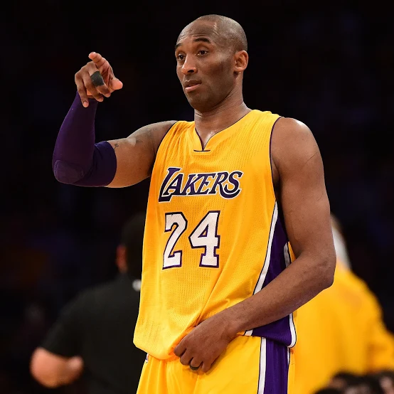
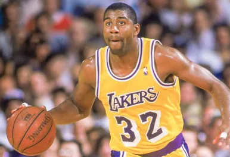
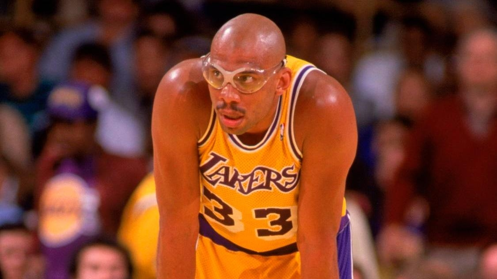
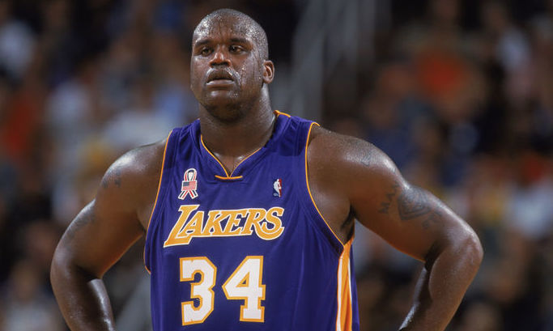
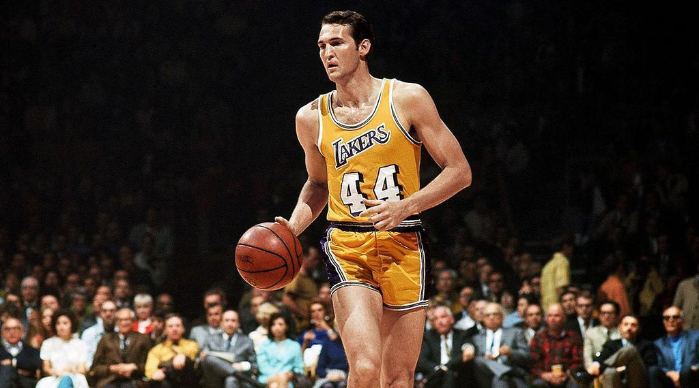
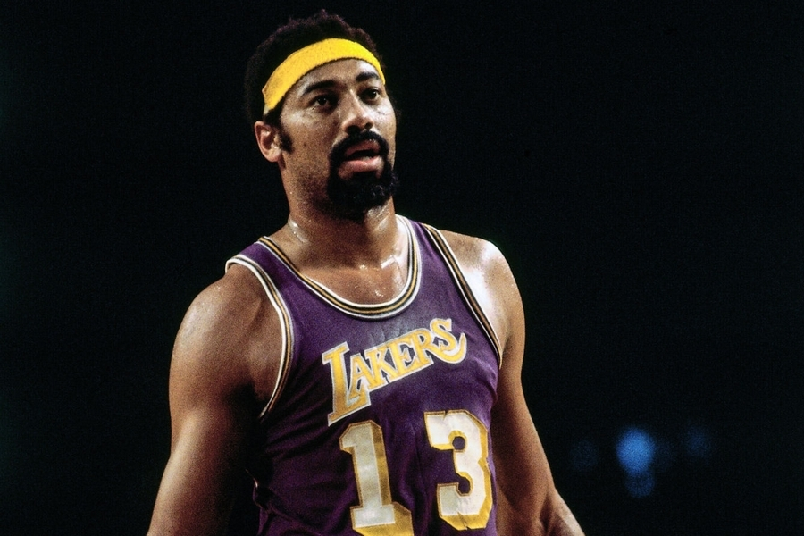
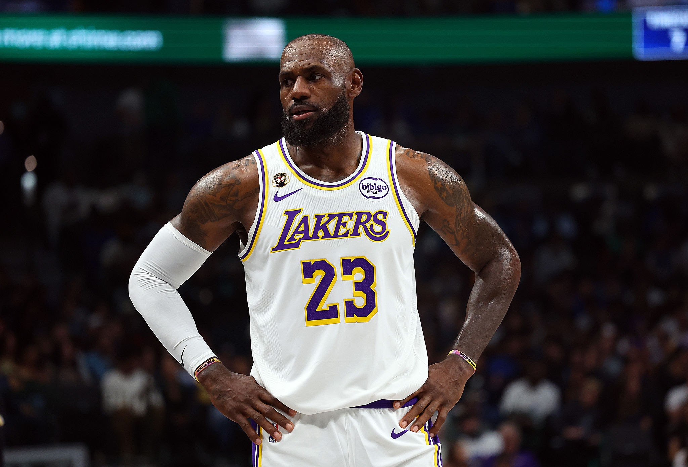
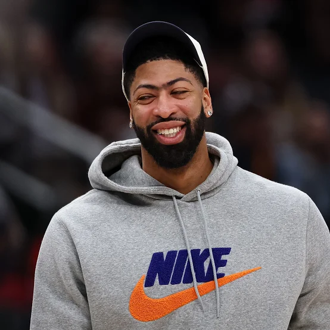

Легендарные игроки

Коби Брайант (1996–2016)
«Чёрная Мамба» — один из величайших игроков в истории баскетбола. За 20 сезонов в «Лейкерс» Коби выиграл 5 чемпионских титулов, 2 раза становился MVP финала, 18 раз участвовал в Матче всех звёзд. Он набрал 33 643 очка за карьеру и навсегда изменил культуру «Лейкерс». Его номера 8 и 24 выведены из обращения. Коби трагически погиб 26 января 2020 года.

Мэджик Джонсон (1979–1991, 1996)
Эрвин «Мэджик» Джонсон — архитектор эры «Showtime». Разыгрывающий ростом 206 см революционизировал позицию, играя на всех пяти позициях. 5 чемпионских титулов, 3 награды MVP сезона, 3 MVP финала. Его улыбка и харизма сделали «Лейкерс» глобальным брендом. Мэджик считается одним из лучших разыгрывающих в истории НБА.

Карим Абдул-Джаббар (1975–1989)
Карим Абдул-Джаббар — лучший бомбардир в истории НБА (38 387 очков, рекорд держался до 2023 года). Его фирменный «скай-хук» был практически неблокируемым броском. За время в «Лейкерс» он выиграл 5 чемпионских титулов. 6-кратный MVP сезона в общей сложности — абсолютный рекорд НБА.

Шакил О'Нил (1996–2004)
«Дизель», «Супермен» — один из самых доминирующих центровых в истории баскетбола. При росте 216 см и весе 147 кг Шакил был неудержим под кольцом. Вместе с Коби Брайантом он привёл «Лейкерс» к три-питу (2000–2002), выиграв три награды MVP финала подряд. Его доминирование было абсолютным.

Джерри Уэст (1960–1974)
«Мистер Клатч» — легенда «Лейкерс» и человек, чей силуэт стал логотипом НБА. Джерри Уэст был одним из лучших защитников в истории лиги, 14 раз участвовал в Матче всех звёзд. Он единственный игрок, получивший награду MVP финала, будучи в проигравшей команде (1969).

Уилт Чемберлен (1968–1973)
Обладатель множества рекордов НБА, включая 100 очков в одном матче. В «Лейкерс» он выиграл свой единственный титул (1972). В том сезоне «Лейкерс» установили рекорд — 33 победы подряд, который не побит до сих пор.

ЛеБрон Джеймс (2018–настоящее время)
«Король Джеймс» — один из величайших игроков в истории НБА. Перейдя в «Лейкерс» в 2018 году, ЛеБрон привёл команду к 17-му чемпионскому титулу в 2020 году. В 2023 году побил рекорд Карима, став лучшим бомбардиром в истории НБА. 4-кратный чемпион, 4-кратный MVP сезона.

Энтони Дэвис (2019–настоящее время)
«Бровь» — один из лучших двусторонних игроков в современной НБА. Был обменян в «Лейкерс» в 2019 году и сразу помог команде выиграть чемпионство в 2020 году. Его умение защищаться и доминировать на обоих концах площадки делает его ключевым игроком команды.